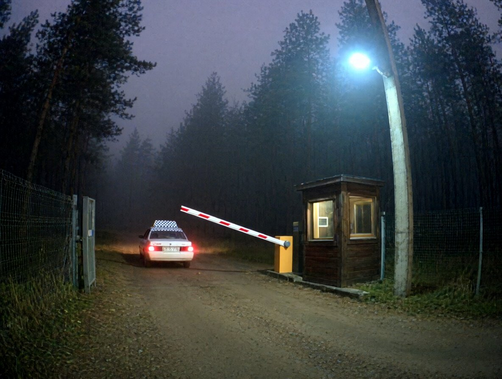

| Таймкод | Що на кадрі |
|---|---|
| 03:00:00 | Ворота: шлагбаум опущений, ліхтар над ним, будка з світлом, туман. Нікого. |
| 03:05:30 | До воріт підʼїжджає Ланос із шашкою на даху (таксі). |
| 03:08:15 | З боку території до машини підходить жінка в червоному пальті, з сумкою; сідає на заднє сидіння. |
| 03:09:10 | Охоронець виходить з будки, піднімає шлагбаум. |
| 03:12:05 | Таксі виїжджає за ворота. (кадр 1) |
| 03:12:50 | Шлагбаум опущено, охоронець у будці. |
| 03:13–04:34 | Шлагбаум закритий, у будці світло. Ніхто не в'їжджає й не виїжджає, ніхто не проходить. |
| 04:34:10 | Охоронець виходить з будки з ліхтарем, іде вглиб території; з кадру. |
| 04:47:25 | Охоронець повертається, заходить у будку. |
| 04:47–05:10 | Без змін. Шлагбаум закритий. Запис закінчується на 05:10:00. |